先把示例的第一句对白改成“Hello!”，再播放、保存并重新打开。请先启动编辑器，然后按顺序操作。
打开顶部的“文件”菜单，选择第二项“从示例开始”。
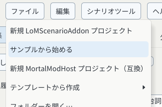
左侧列出01～17步。尚未准备素材时，右侧背景为黑色是正常的。编辑器已经创建了单独的示例副本。
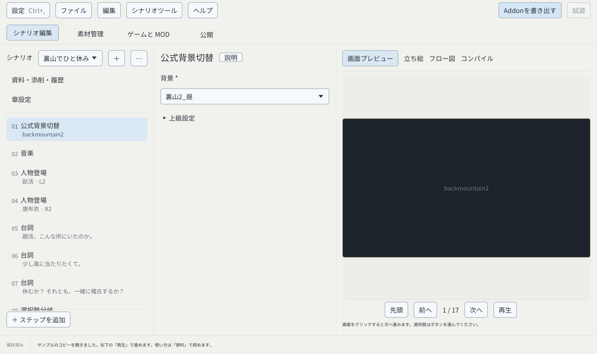
选择“文件 → 从游戏提取预览素材…”。如果已经能看到背景和人物，可直接进入第3节。
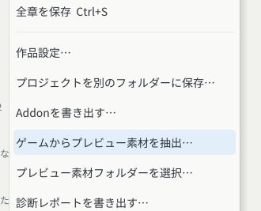
在文件夹路径中输入游戏安装位置，点击“前往文件夹”。确认列表中有Mortal_Data，再点击“使用此文件夹”。黑色遮挡处应是你自己的路径。
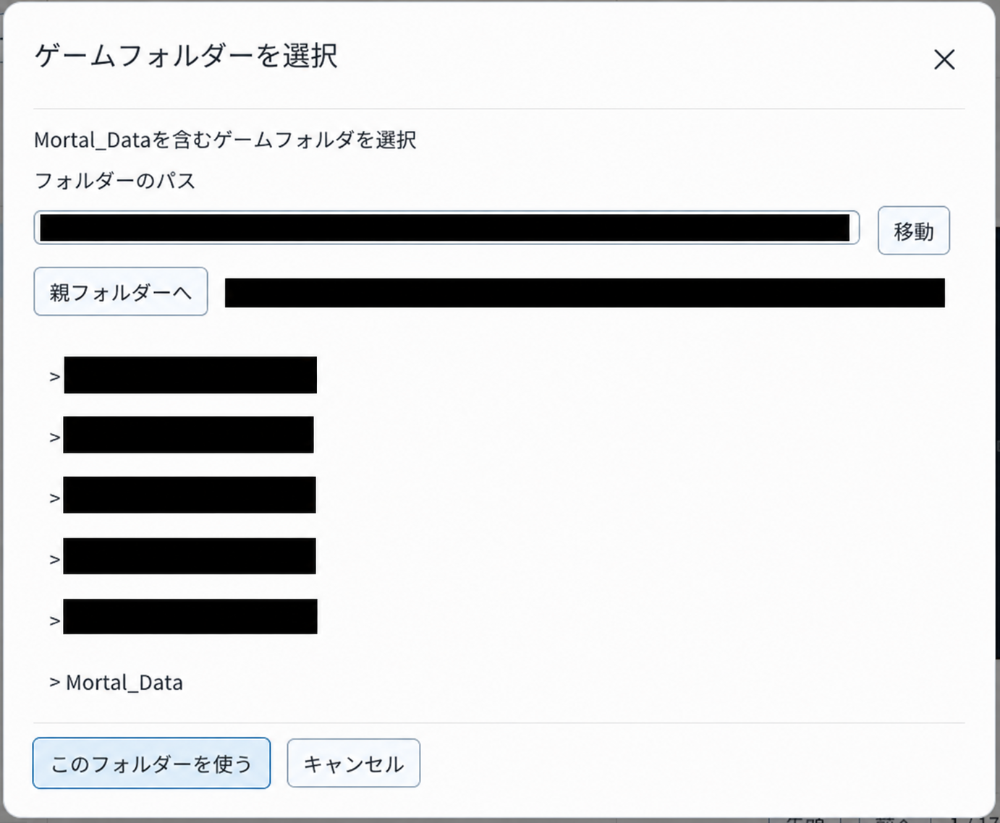
界面显示进度。关闭窗口继续编辑不会中断提取。完成后会显示结果，并自动载入图片。
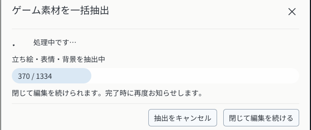
关闭结果，选择左侧第01步。右侧从黑色画面变成后山背景，就准备好了。
重要人物按“人物 → 外观 → 表情”选择，例如“虞小梅 → 入魔 → 特殊表情”。切换外观后只列出它实际可用的表情，不可用的旧表情恢复为正常表情。场中更换为另一官方人物配置时，先让旧外观退场，再让新外观登场。
游戏预览素材用于编辑器右侧的画面。自己的图片、人物和音频则通过“用户内容”加入作品，两者入口不同。
已有素材库时，从“文件 → 选择预览素材库…”载入即可。提取的游戏图片留在本机，不会自动加入导出的作品包。
打开“素材管理 → 作品素材 → 导入素材…”，导入自己的图片、人物或音频，再到相应步骤的表单中选择它。
中央的文本栏显示“趙活、こんな所にいたのか。”。若列表已滚动，请找到05。
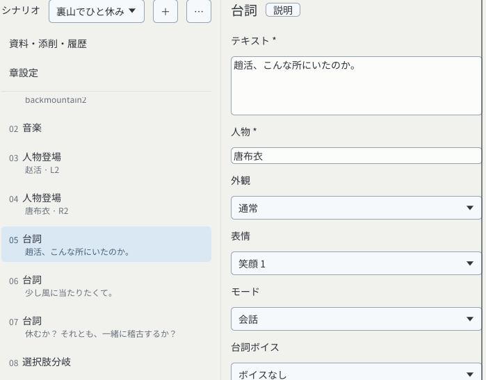
点击中央文本栏，全选原文并输入Hello!。右侧对白也变为Hello!，说明修改已生效。
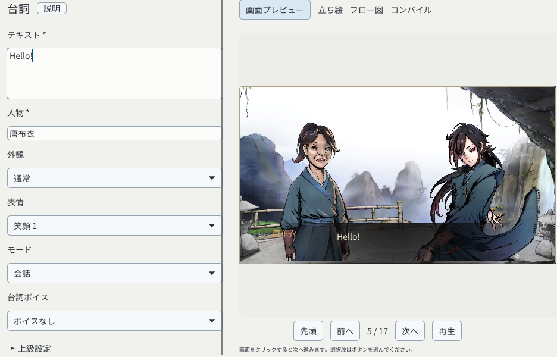
在左侧列表或F7流程图中选择节点，编辑区下方会显示“评定与评论”。单击按钮即可评定，输入后点击“添加评论”即可添加指摘。已有评论可以回复、标记为已解决或重新打开。拖动上边缘可调整区域高度。
切换节点时，未提交的评论保留在原来的节点。“输入中的评论”可返回或放弃草稿。请先提交或放弃草稿，再按Ctrl+S（macOS为⌘S）保存。章节整体的审阅仍在“资料与审阅”中。
播放位置回到1 / 17，已经修改的对白会保留。
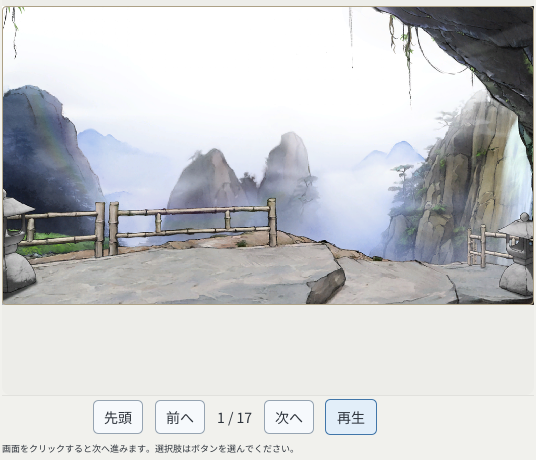
背景和人物依次出现，然后在第05步的Hello!处等待。BGM需要FFplay；首次使用时请等曲目准备完成。
进入第06步“少し風に当たりたくて。”。对白会等待点击，不会计时跳过；也可以点击下方的“下一步”。
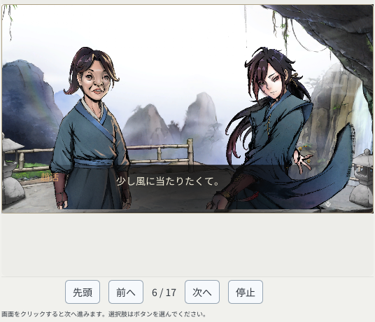
Windows 的“试玩”按钮或 F5 会先检查作品，生成独立的临时试玩包并启动游戏。游戏目录、自动配置和 MOD 列表在顶栏“游戏与 MOD”页面管理；Mac 不提供游戏试玩。
从第06步再点击画面两次，就会看到第08步的选项。点击下方的“一緒に稽古する”（一起练功）。
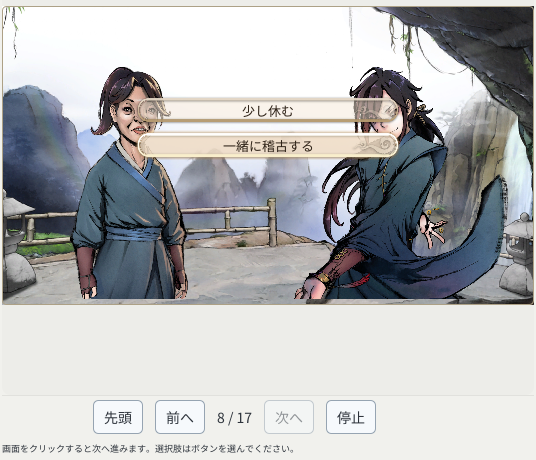
第11步显示“大師兄、お手柔らかに。”。要试另一条路，选中左侧第08步，再点击“少し休む”（休息一下）。
没有跳转时，剧情会按左侧的顺序向下播放。选项和条件分支可以把剧情带到另一处；结束剧情用来为当前章节收尾。
只写一段独立剧情：对白 → 结束剧情（下一章节留空） 继续下一章：对白 → 结束剧情（选择下一章节）
修改会保存到这个副本。Windows/Linux也可用Ctrl+S，macOS用⌘S。
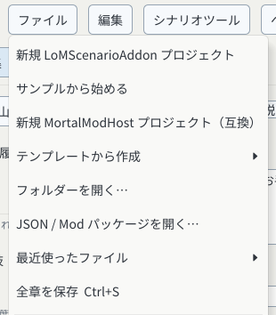
出现这个状态就表示已写入磁盘。保存前，修改只存在于当前打开的编辑器中。
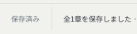
选择“文件 → 最近打开”，再选择刚保存的first-scene-…。再次选择“从示例开始”会新建另一个副本，继续编辑时请用最近打开。
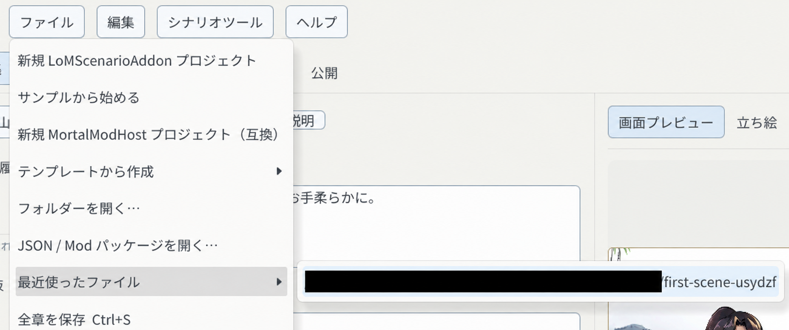
检查中央文本和右侧对白。这样就完成了修改、播放、保存和重新打开。接下来可换成自己的台词。F6可检查当前章节。
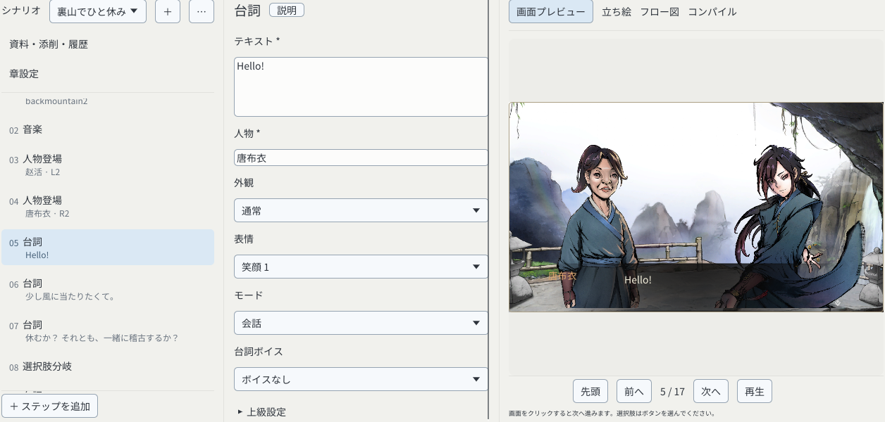
“人物登场”负责把立绘放到画面里，“对白”负责显示台词。先让人物登场，再安排移动或退场，会更容易看懂演出顺序。
切换背景 ↓ 人物登场：选择人物、表情和站位 ↓ 对白：选择同一个人物，写一句台词 ↓ 人物退场 ↓ 结束剧情
普通步骤按顺序执行。“同时执行组”把多个演出动作放在同一组里：一起开始，等全部动作结束，再继续后面的步骤。
同时执行组 动作 1：人物甲退场，0.5 秒 动作 2：人物乙退场，0.5 秒 ↓ 两个动作都结束 后续对白
可以放人物登场、移动、退场以及表单提供的其他演出动作。每个组包含 2～32 个动作；对白、选项、战斗和跳转放在组外。
目标是揭开黑幕后，新背景和人物已经同时在画面中。先遮住画面，在黑幕后换景、放人物，最后揭幕。
转场：淡入（盖上黑幕） ↓ 切换背景 → 人物就位 ↓ 转场：淡出（揭开黑幕） ↓ 对白
检查结果会弹窗显示。先看顶部结论，再看具体问题及位置；原始字段和完整数据收在“技术详情”，需要排查时再展开。
F6 检查当前章节。完整作品检查：打开“发布”，在“发布体检与打包”里选择“发布体检”。
耗时任务可以点“收起，继续编辑”。底部“查看进度或结果”能重新打开窗口；完成后还会提示结果。
用表单写剧情时，不需要先学编程。遇到不熟悉的词，可以先按下面的意思理解。
新建或打开作品后，记得定期保存。编辑器界面语言和作品中的台词翻译是两件事。
Mac：屏幕顶部应用菜单的“设置…”或 ⌘,。Windows/Linux：“设置…”或 Ctrl+,。可切换简体中文、繁体中文、日语和韩语。作品台词的翻译在“编辑 → 多语言”里处理。